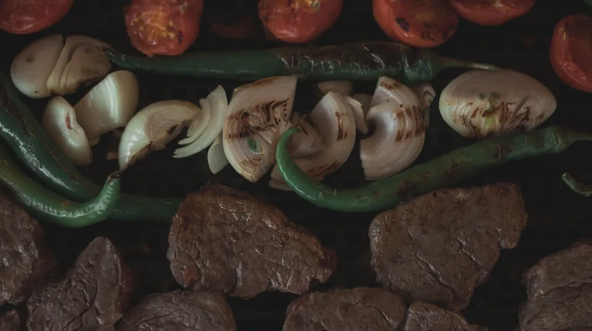

에어프라이어 레시피 3가지, 이것만 알면 요리 초보도 겉바속촉 성공
사진: Nothing Ahead / Pexels (무료 이미지, 출처 표기)
에어프라이어를 장만했지만 냉동식품 해동용으로만 쓰고 계시진 않나요? 온도 조절에 실패해 겉은 타고 속은 안 익는 경험을 해보셨다면 이 글이 도움이 될 것입니다. 누구나 쉽게 따라 할 수 있는 에어프라이어 활용 레시피와 핵심 팁을 보기 쉽게 정리해 드립니다.
에어프라이어 요리가 실패하는 진짜 이유

많은 분이 예열 과정을 건너뜁니다. 예열은 겉은 바삭하고 속은 촉촉하게 만드는 핵심 단계입니다. 요리를 시작하기 전에 180도 온도에서 3분간 미리 기기를 작동시켜 예열해보세요. 재료가 들어갔을 때 표면이 빠르게 익으며 육즙이 가두어집니다.
또한, 바스켓에 음식을 꽉 채우면 열풍이 제대로 순환하지 못합니다. 재료는 서로 겹치지 않게 한 겹으로 넓게 깔아주는 것이 골고루 익히는 비결입니다. 공기 순환 통로를 확보해야 기름은 빠지고 바삭함은 살아납니다.
요리 초보도 무조건 성공하는 핵심 레시피 3선
가장 대중적이고 만족도가 높은 세 가지 메뉴의 적정 온도와 조리 시간을 비교표로 구성했습니다. 이 기준을 기본으로 삼고 기기 사양에 따라 조금씩 조절해 보세요.
종이호일 사용할 때 꼭 알아야 할 화재 예방 수칙
설거지가 귀찮아서 종이호일을 자주 까실 텐데요. 종이호일이 상단의 가열 코일(열선)에 직접 닿으면 순식간에 불이 붙을 수 있습니다. 소방재청의 안전 경고에 따르면 에어프라이어 내부 화재의 상당수가 종이호일 과열로 인해 발생합니다.
따라서 반드시 재료의 무게가 종이호일을 충분히 눌러줄 수 있을 때만 사용해야 합니다. 김이나 쥐포처럼 가벼운 식재료를 구울 때는 공기 순환 바람에 호일이 날려 열선에 밀착되기 쉬우므로 가급적 종이호일 사용을 피하는 것이 안전합니다.
코팅 손상 없는 올바른 세척 및 관리 방법
사용 직후 뜨거운 상태의 바스켓에 바로 찬물을 부으면 온도 차이로 인해 내부 코팅이 빠르게 손상됩니다. 열기가 완전히 식은 후에 따뜻한 물과 중성세제를 이용해 부드러운 수수미로 부드럽게 닦아내야 오래 사용할 수 있습니다.
내부 열선에 튄 기름때는 물과 베이킹소다를 1:1 비율로 섞어 천에 묻힌 뒤 살살 닦아내면 잘 지워집니다. 위생적인 관리가 기기의 수명을 늘리고 탄 냄새를 예방하는 가장 확실한 방법입니다. 가전 제조사의 권장 매뉴얼에 따라 주기적으로 내부 청소를 진행하시길 권장합니다.
🔗 이 글도 함께 보면 좋아요: 내 돈 지키는 보험 리모델링, 해지하기 전 반드시 확인할 3가지
관련 추천 상품
이 포스팅은 쿠팡 파트너스 활동의 일환으로, 이에 따른 일정액의 수수료를 제공받습니다.